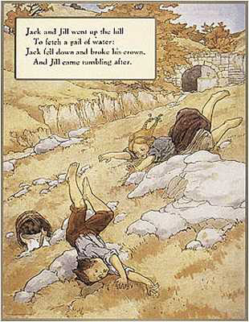

Home Page
F.A.Qs
Statistical Charts
Past Contests
Scheduled Contests
Award Contest
| Online Judge | Problem Set | Authors | Online Contests | User | ||||||
|---|---|---|---|---|---|---|---|---|---|---|
| Web Board Home Page F.A.Qs Statistical Charts | Current Contest Past Contests Scheduled Contests Award Contest | |||||||||
|
Language: Jack and Jill
Description Ever since the incident on the hill, Jack and Jill dislike each other and wish to remain as distant as possible. Jack and Jill must attend school each day; Jack attends a boys' school while Jill attends a girls' school. Both schools start at the same time. You have been retained by their lawyers to arrange routes and a schedule that Jack and Jill will adhere to so as to maximize the closest straight-line distance between them at any time during their trip to school.
Jack and Jill live in a town laid out as an n by n square grid (n <= 30). It takes 1 minute to walk from one location to an adjacent location. In maximizing the distance between Jack and Jill you need consider only the distance between the locations they visit (i.e. you need not consider any intermediate points on the path they take from grid location to grid location). Some locations are impassable due to being occupied by rivers, buildings, etc. Jack must start at his house and walk continuously until he gets to school. Jill must start at her house at the same time as Jack and walk continuously until she arrives at her school. Jack's house and school are impassable to Jill while Jill's house and school are impassable to Jack. Other grid locations that are impassable to both Jack and Jill are given in the input. Input Input will consist of several test cases. Each test case will consist of n, followed by n lines with n characters representing a map of the town. In the map, Jack's house is represented by 'H', Jack's school is represented by 'S', Jill's house is represented by 'h', Jill's school is represented by 's', impassable locations are represented by '*', and all other locations are represented by '.' You may assume the normal cartographic convention that North is at the top of the page and West is to the left. A line containing 0 follows the last case. Output For each input case you should give three lines of output containing:
Each route is a sequence of directions that Jack or Jill should follow for each minute from the start time until arriving at school. Each direction is one of 'N', 'S', 'E', or 'W'. If several pairs of routes are possible, any one will do. You may assume there is at least one solution. Leave a blank line between the output for successive cases. Sample Input 10 .......... ...H...... .**...s... .**....... .**....... .**....... .**....... .**....... ...S..h..* .......... 0 Sample Output 6.71 WWWSSSSSSSEEE NEEENNNNNWWW Source | ||||||||||
[Submit] [Go Back] [Status] [Discuss]
All Rights Reserved 2003-2013 Ying Fuchen,Xu Pengcheng,Xie Di
Any problem, Please Contact Administrator